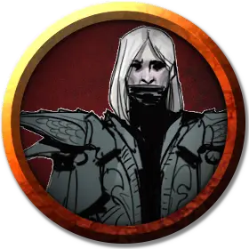

Драконий клык
Dragonfang
Средний Гуманоид (Человек), нейтрально-злой

Класс Доспеха 15 (клепанный кожаный доспех)
Хиты 78 (12к8 + 24)
Скорость 30 футов
| мод | спас | ||
|---|---|---|---|
| СИЛ | 11 | +0 | +0 |
| ЛОВ | 16 | +3 | +3 |
| ТЕЛ | 14 | +2 | +2 |
| мод | спас | ||
|---|---|---|---|
| ИНТ | 12 | +1 | +1 |
| МДР | 12 | +1 | +3 |
| ХАР | 14 | +2 | +2 |
Навыки Обман +4, Скрытность +5
Сопротивление урону кислота, огонь, холод, электричество, яд
Чувства пассивное Восприятие 11
Языки Общий, Драконий
Опасность 5 (1800 опыта)
Бонус мастерства +3
Особенности
Сопротивление. урону одно из следующих: кислота, холод, огонь, электричество или яд.
Драконий фанатик. Драконий клык проходит спасброски против испуга и очарования с преимуществом. Пока драконий клык видит дружественного дракона или представителя Культа Дракона более высокого ранга, он игнорирует эффекты состояний испуганный и очарованный.
Преимущество Фанатика. Один раз за раунд, если драконий клык проводит атаку оружием с преимуществом на броски атаки и попадает ею, он наносит дополнительный урон 10 (3к6).
Ограниченный полёт. Драконий клык может бонусным действием получить скорость полёта 30 футов до конца своего хода.
Тактика стаи. Драконий клык получает преимущество на броски атаки против существ, если хотя бы один из союзников драконьего клыка находится в пределах 5 футов от цели атаки и боеспособен.
Действия
Мультиатака. Драконий клык совершает две атаки коротким мечом.
Короткий меч. . Рукопашная атака оружием: +5 к попаданию, досягаемость 5 футов, одна цель. Попадание: колющий урон 6 (1к6+3) плюс 7 (2к6) урона того же типа, что и сопротивление урону.
Шар драконьего дыхания (2/день). Дальнобойная атака заклинанием: +5 к попаданию, дистанция 90 футов, одна цель. Попадание: 22 (5к8) урона того же типа, что и сопротивление урону.